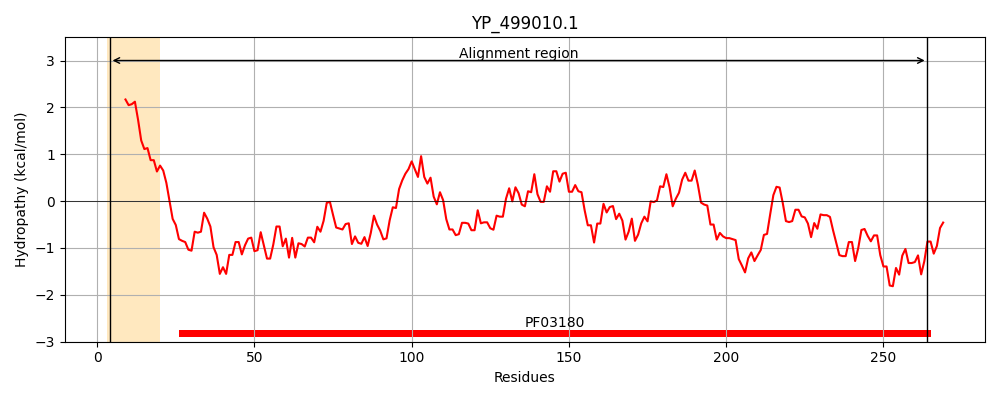
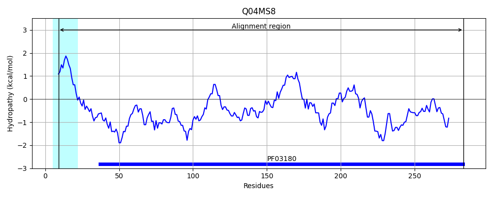
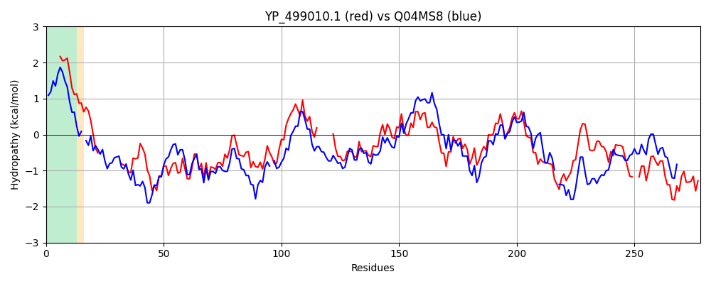

Hit Accession: Q04MS8
Hit TCID: 3.A.1.24.6
Hit Description: gnl|BL_ORD_ID|12193 gnl|TC-DB|Q04MS8|3.A.1.24.6 Lipoprotein OS=Streptococcus pneumoniae serotype 2 (strain D39 / NCTC 7466) GN=SPD_0151 PE=3 SV=1
Mach Len: 278
e:0.000000
Query TMS Count : 1
Hit TMS Count: 1
TMS-Overlap Score: 0.750000
Predicted Substrates:CHEBI:7990;peptide
BLAST Alignment:
Score: 471 , Bit scores: 186 bits, E-value: 9.4e-58, Alignment length: 278, Percentage identity: 39
Query: 4 LIGLVIVALVLLAACGGNNDKKV---------TIGVASNDTKAWEKVKELAKKDDIDVEIKHFSDYNLPNKALNDGDIDMNAFQHFAFLDQYKKAHKGTKISALSTTVLAPLGIYS------DKIKDVKKVKDGAKVVIPNDVSNQARALKLLEAAGLIKLKKDFGLAGTVKDITSNPKHLKITAVDAQQTARALSDVDIAVINNGVATKAGKDPKNDPIFLEKSNSDAVKPYINIVAVNDKDLDNKTYA--KIVELYHSKEAQKALQEDVKDGEKPV 264
L L VA + LAACG N++KK T+ + ++ K W+K++EL KKD I +E F+DY+ PNKA DG++D+NAFQH+ FL+ + K + G + A+ T ++P+ +YS +K V+ + ++ +PND +N++RAL LL++AGLIKL TV +I NPK+LKIT +DA QTAR+LS VD AV+NN T+A D K +F E+++ ++ + Y IVA D + K A K++ YH+ + +K ++E ++PV
Sbjct: 9 LAALATVAGLALAACG-NSEKKADNATTIKIATVNRSGSEEKRWDKIQELVKKDGITLEFTEFTDYSQPNKATADGEVDLNAFQHYNFLNNWNKEN-GKDLVAIGDTYISPIRLYSGLNGSANKYTKVEDIPANGEIAVPNDATNESRALYLLQSAGLIKLDVSGTALATVANIKENPKNLKITELDASQTARSLSSVDAAVVNNTFVTEAKLDYKK-ALFKEQADENSKQWYNIIVAKKDWETSPKADAIKKVIAAYHTDDVKKVIEESSDGLDQPV 283 | Protein Hydropathy Plots: |
|---|
|  |  |
Pairwise Alignment-Hydropathy Plot:
|
|---|
|  |